|
|
熊谷さんアップ
-MOMAの中庭にて-（くまたに）
なぜか、ここの警備員さんは、どんなに遠くにいても、
ここでジュースを飲む人を見つけると必ずやって来て「木陰のテラスへ行け!」と発奮します。
男性、女性問わず、みんな必ず怒鳴ってから、テラスに行きます。
私達は、静かにテラスに行きました。
強いです、アメリカ人。（とこい）
|
|
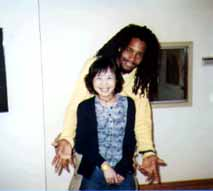
|
ドレッドさんと熊谷さん
あまりのかわいさに写真を一緒に撮ってもらっちゃった。（くまたに）
|
|
|
ジャスティンさん
お世話になったエンジニア2人のうちのお一方。
二人ともおもしろい日本語を話します。（くまたに）
|
|
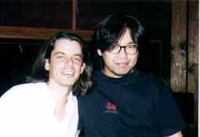
|
ジャスティンさんと床井くん
空手をかなり習っていて、見かけよりはるかに腕力があります。
パンチインの時に失敗するとよく、「ん〜〜、ダメパンチ」と独り言を言っていたのがとても
印象深いです。（とこい）
|
|
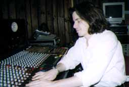
|
ジャスティンさんのお仕事風景
ちょっとの間だけお仕事風景を撮りました。
仕事中はかっこいいけど、日本語を喋ると芸人系になります。（とこい）
|
|
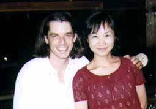
|
ジャスティンさんと熊谷さん
ジャスティンと最後のお仕事の日に撮った記念撮影。
この頃には私達とすごい仲良しになって、いろいろお話ししましたね。（くまたに）
|
|
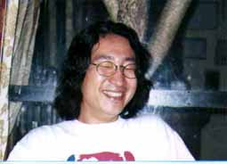
|
小杉さんアップ
過去に一緒にやったという、ユッスー・ン・ドゥールさんとの写真を見せて頂いた時には驚きました。
かなり短髪でいらっしゃったので小杉さんだと分からなかったんです。
でも、やっぱり小杉さんといえば、ロングです。（とこい）
|
|
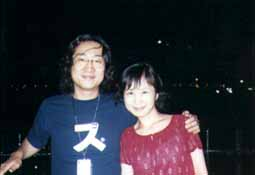
|
小杉さんと熊谷さん
こちらが小杉さん。
なんかわたしら秘密の旅行っぽくないかい?（くまたに）
|
|
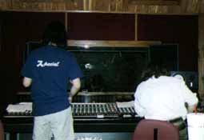
|
小杉さんとジャスティンさんのお仕事風景
ドラムとベース以外はこの風景を見ながらの作業となりました。
もう凄く見慣れてしまったので、この時はごく当たり前のようにしか感じていませんでしたが、
時間が立つと、とても思いで深い風景でもあります。（とこい）
|
|
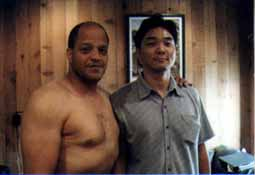
|
リッキー・ウェルマンさんと大川てつさん
てつさん、もうアメリカでの生活は8年だそう。
歳も私達と近く話しがはずみました。
今でもメールしたり電話したり、仲良しです!（くまたに）
実は危険なエリアに住んでいる方なのです、てつさんは。（とこい）
|
|
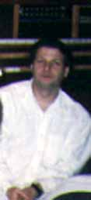
|
ロイさん
最初にお世話になったエンジニアのロイさんです。
ジャスティンさん曰く、「ロイはニューヨークでNO.1のエンジニアだ」。
たしかに、あの時間で、あれだけのセンスの良さを表現できるのだもの。（くまたに）
|
|
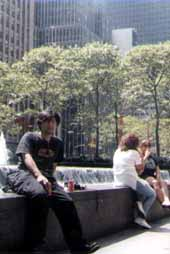
|
床井くん
とこいくんのNew York人写真。-Middle Townにて-
「チョット〜アメリカジンデ〜スカ〜?」＞ジャスティン風。（くまたに）
この日は本当に気持ちがよかった。
かなり暑かったけど、乾燥してるのであまり汗をかかなかった。（とこい）
|
|
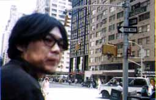
|
床井くん
これは歩き疲れて休憩しているの図。
かなりおやじはいってますか?
右頬に何か貯えているようですが、記憶にございません。（とこい）
|
|
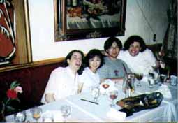
|
ロイさん、ジャスティンさんと私達
打ち上げ風景。
最高おもしろかった!（くまたに）
ロイさんがおばさんに見えてしまうのは、私だけ?（とこい）
|
|
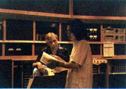
|
ウィル・リーさんと小杉さん
お仕事中写真。（くまたに）
真剣です!!!（とこい）
|
インデックスにもどる |